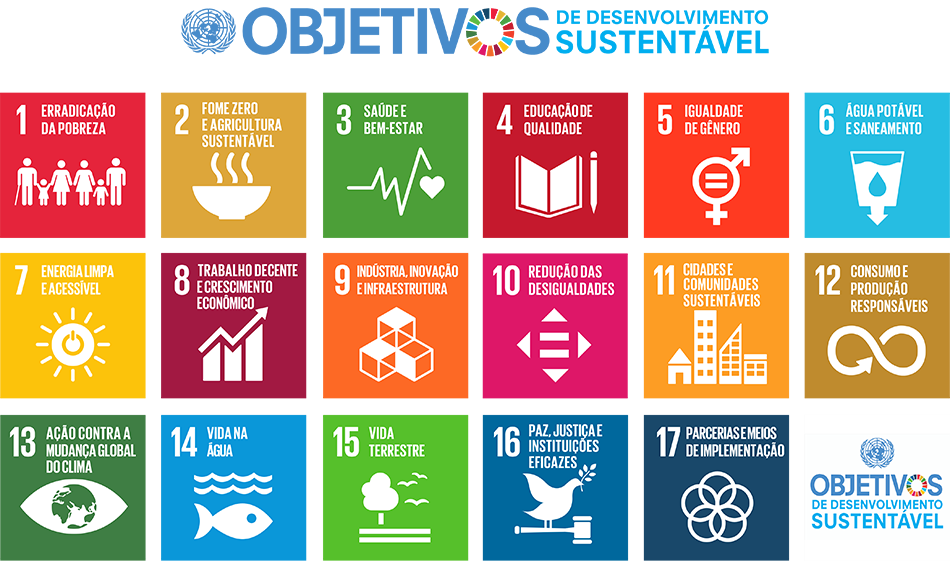

Projeto Multidisciplinar
Nesta página nós teremos os topícos do Projeto Multidisciplinar e informações para ajudar a realiza-lo
O que é o projeto Multidisciplinar
O projeto Multidisciplinar é uma matéria ofertada no meu curso de Gestão de RH, mas ele também é oferecido em outros cursos. Está matéria está na grade do MAC e como os cusrsos tecnólogos não tem TCC essa matéria entra na grade junto, também tem outa matéria que seria o estudo integrado.
O projeto Multidisciplinar está presente em todos os peíodos do curso, ele não tem recuperação e nem atividades ou provas apenas o trabalho, outa coisa importante é que ele é feito de forma EAD, sem aulas presenciais, mas os estudos não são só em casa algumas vezes tem a necessidade de você trabalhar com outas organizações.
Durante essa matéria você terá a juda de um tutor(a) como nas outras disciplinas, podendo pediar ajuda e falar com ele(a) quando tiver dificuldades. Como pode ver é uma disciplina igual as outras mas tem um destaques para ficar atento com o praqzo de entraga que é feito em duas partes, podendo ser entregue em apenas uma das duas, é disponibilizado abas de ajuda e recomendações.
Como deve ser feito
o projeto Multidisciplinar que abordaremos aqui é o III onde o aluno tem que scolher um ou mais dos 17 ODS e, norteado pelo(s) ods escolhido(s), o aluno irá escolher uma empresa e, então entrar em contato com ela, pode ser tanto por e-mail ou de forma presencial, caso escolha fazer na empresa que trabalha por exemplo, despois disso feito, deve ter a recolha das informações necessarias que o aluna vai precisar pra fazer uma proposta, nessa proposta precisa ter formas que a empresa pode adotar para ajudar a alcançar os ODS
Apois a coleta das informações e a elaboração da proposta o aluno só precisará fazer um relatório para entregar para a univercidade e a proposta será entregue para a empresas. Lambrando que há uma data para a entraga do relatória a univercidae e a proposta para a emprese deve ser entregue até o ultimo dia do período